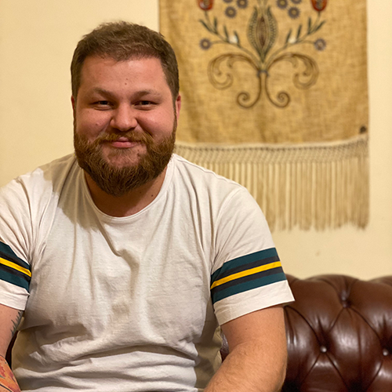

Ali Al Najjar
Cohort #: 21 / SEF ID: 4
A Small Description
With more than 6 years working in web development, I gained a lot of experience in creating new websites specifically for non-governmental organisations working in Lebanon. I used several content management systems to build the requested websites such as Drupal, Wordpress and also used Atomic Design tools such as Pattern Lab.
Hobbies:
- Oriental Singing
- Oud
- Football
- Swimming
Table Of Experiences:
| NGO | Position | Period | Website |
|---|---|---|---|
| Lebanon Support | Innovation and Technology Officer | July 2017 - July 2020 | Daleel Madani,Lebanon Support,Civil Society Knowledge Centre |
| Lebanon Support | ICT Assistant | November 2015 - June 2017 | |
| Lebanese Labor Watch | Web Developer | June 2017 - Jan 2020 | Lebanese Labor Watch |
| Middle East Directions | Web Developer | March 2018 - Jan 2021 | Middle East Directions |
| Al Nems | Web Developer | March 2019 - June 2022 | Al Nems |
Table Of Education:
| University | Major | Degree | Period |
|---|---|---|---|
| Arab Open University | Information Technology and Computing | Bachelor of Science in Information Technologies and Computing | 2012 - 2016 |
Get in touch: